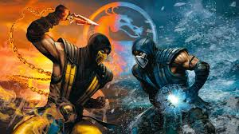

Who is Sub-Zero?
Sub-Zero is a legendary ninja warrior known for his ability to control ice. He is one of the most iconic characters in the Mortal Kombat universe. His real name in many versions of the story is Kuai Liang.

Sub-Zero fights to protect Earthrealm and often battles enemies such as Scorpion and other powerful warriors. His ice powers allow him to freeze opponents and create deadly weapons made of ice.